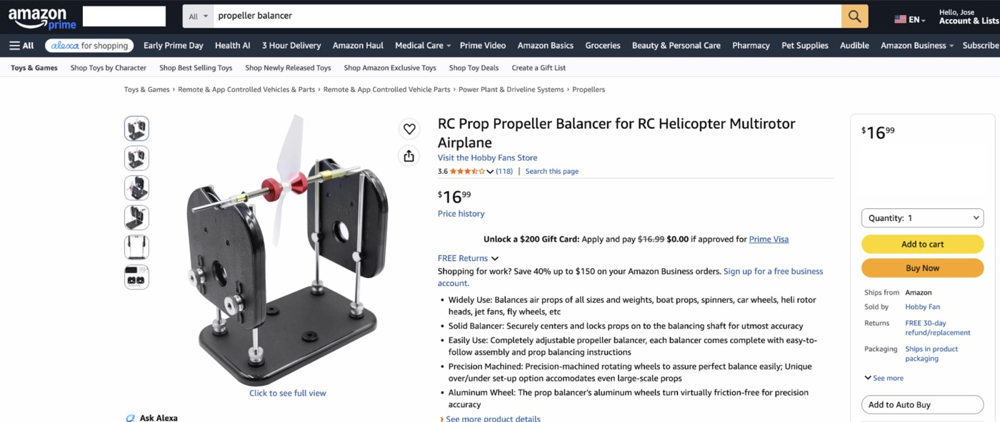

Propeller Static Balancer
An air-bearing balancer that cut prop balancing from five minutes to thirty seconds.
This was my first project as a mechatronics intern on Zipline's powertrain team. We were building two-blade propellers about thirty inches across: a carbon fiber skin over a foam core, spun on a brass hub, turning up to roughly 4,000 rpm.
Each prop weighed around 300 grams, and nearly every one came off the line with a small mass imbalance, usually a millimeter or two between its center of mass and its center of rotation. That sounds negligible until you remember it is spinning at 4,000 rpm, where a tiny offset turns into real vibration.
The Problem
We had to catch and correct that imbalance on every prop. The easy option was a cheap static balancer from the RC hobby world, the kind you order on Amazon for model planes, but they were not repeatable enough to trust.

The real instrument, a dynamic balancing machine, was on order and more than six months out. So the question was narrow and practical: could I build something fast that was reliable enough to hold us over?
Requirements
Start from what we actually dislike: the rotating force the imbalance throws once the prop is at speed. Treating the imbalance as a small mass at radius , that force is
The product is the unbalance, , so . It climbs with the square of speed, which is exactly why 4,000 rpm is the number that matters.
A prop sitting a couple of millimeters off center carries a small but real unbalance, and squaring the speed turns it into a sideways force on the order of a hundred newtons, yanking once per revolution. That is the vibration we needed to kill.
So the requirement is a target residual: trim the unbalance until that rotating force drops to something the powertrain is happy to live with. Whatever that force ceiling is, it sets an unbalance ceiling,
and that is the real job. The balancer has to let us find and trim every prop down to around , and point at the heavy side without lying.
Measuring Imbalance
A static balancer reads that unbalance with gravity instead of speed. Put the prop on a horizontal axis and let it turn freely, and gravity pulls on to make a torque about the axis:
where is the angle of the heavy spot above horizontal. The torque is largest when the blade is level and falls to zero when the heavy spot hangs straight down.
That torque accelerates the prop:
and the imbalance barely changes , since its contribution scales as and is tiny. So stays essentially the prop's own inertia, and the whole thing behaves like a pendulum. It swings until the heavy side settles at the bottom.
Where it stops is the reading: the heavy side points down. And the smallest unbalance we have to resolve, , shows up as the smallest torque we must respond to,
That tiny gravity torque is the thing the entire machine has to be built around.
What Fights Sensitivity
Two things stand between that tiny torque and a reading we can trust: friction at the axis, and the inertia of whatever is spinning.
Friction sets a threshold. A plain journal bearing resists turning with a torque of about
where is the friction coefficient, is the load the bearing carries (mostly the prop's weight), and is the shaft radius. If is larger than , the prop never moves for a small imbalance and the tool quietly lies. The first hard requirement is therefore , with margin.
Inertia sets the speed of the answer. Rearranging the pendulum equation,
a smaller means the prop accelerates toward heavy-side-down faster, so a faint imbalance still produces a visible swing in a reasonable time. The catch is that the prop itself dominates . Modeling it as a slender rod,
the prop's inertia dwarfs anything a thin shaft adds, by something like a factor of a million. We cannot make the system meaningfully faster by shrinking the shaft; the prop's inertia is simply what it is.
That tells us where to spend effort. Added inertia is already negligible, so the fight is almost entirely friction. We still keep the fixture light and small, because less rotating mass means a smaller bearing load , which lowers directly.
Choosing the Bearing
With friction as the binding constraint, the bearing is the whole game. Here is roughly what the options give you:
| Bearing | Typical μ | At tiny torque |
|---|---|---|
| Dry sliding, steel on steel | ~0.6 | far too much |
| Lubricated plain | 0.05-0.1 | still too much |
| Rolling element, ball | 0.001-0.005 | low on average, but notchy |
| Jewel pivot | ~0.0001 | very low, but weak under load |
| Aerostatic, air | ~0.00001 | no contact, smooth and repeatable |
On paper a good ball bearing looks fine, but at these tiny torques its real behavior is notchy. Detent torque from the balls, stiction, and runout that changes every time you spin it add up to readings you cannot repeat. That unrepeatability is precisely why the hobby balancers could not be trusted.
A jewel pivot is beautifully low-friction but does not love the load and side forces of a thirty inch prop. An air bearing has no solid contact at all. It floats the shaft on a film of pressurized air, so its friction is continuous, vanishingly small, and the same on every spin. For a sensitive, repeatable reading, it was the obvious pick.
Other Things That Bite
Once the bearing is nearly frictionless, effects you would normally ignore start to matter. A faint draft in the room pushes on a thirty inch blade with enough force to rival the imbalance torque, so the whole thing needs an enclosure to kill air currents.
The axis has to be truly level, or gravity itself biases which way the prop settles. The shaft has to be straight and run true, because any runout or eccentricity reads as an imbalance that is not really there. And the prop has to mount concentric and the same way every time, or you end up measuring the fixture instead of the part.
The Design
From there the build is mostly bookkeeping against those requirements. The core is an aerostatic bearing on a hardened, ground stainless steel shaft, held dead straight and run on shop air, with light machined aluminum brackets and an aluminum extrusion frame so the rotating mass stays small and the bearing load stays low.
A small enclosure blocks drafts, a level sets the axis true, and a laser pointer throws a line across the blade so you can mark exactly where a correction belongs. A fixed pass/fail threshold turns the settled position into the same yes-or-no for everyone on the line.
Correcting the Imbalance
Finding the heavy side is half the job; the fix is adding matching weight to the light side. We used 1.0 inch circles of 0.1 mm stainless steel tape, added one at a time with a re-check after every circle.
Placing them along the blade from tip toward root tunes both how much weight you add and how much leverage it has, since a circle near the tip counts for far more unbalance than one near the root. The worst prop I balanced took about eleven circles walked down one blade before it would hold level.
Building and Testing
With the concept settled, the rest was sizing the shaft and bearing to the prop's weight, machining the brackets, plumbing the air, and assembling it on the extrusion frame. The real test was whether it could do the one thing it existed for: resolve down to about one tape circle of unbalance and point at the heavy side the same way twice.
I checked it against props I had already balanced and against deliberately mis-weighted ones, then tightened the level and the mounting until the readings repeated. Once they did, it went on the line and held until the dynamic balancer finally arrived.
Results
It did the job. Balancing dropped from around five minutes on the hobby tools to under thirty seconds, roughly ten times faster and far more consistent.
More importantly, it was trustworthy. The air bearing and a quiet, level, enclosed setup made it sensitive enough to catch the offsets that actually mattered at 4,000 rpm, and the fixed pass/fail line meant everyone got the same answer.
Specifications
Gallery